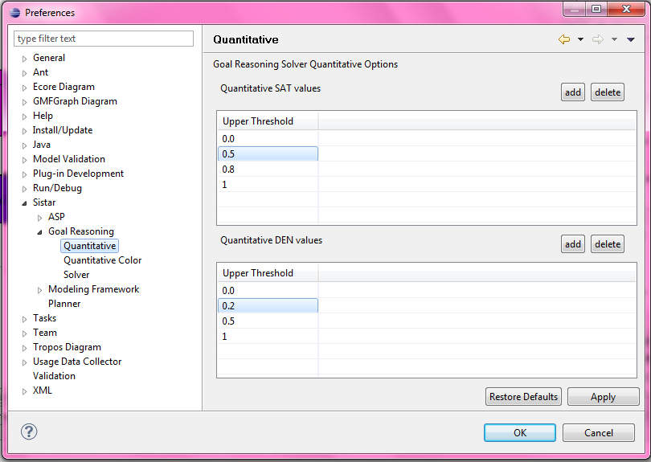
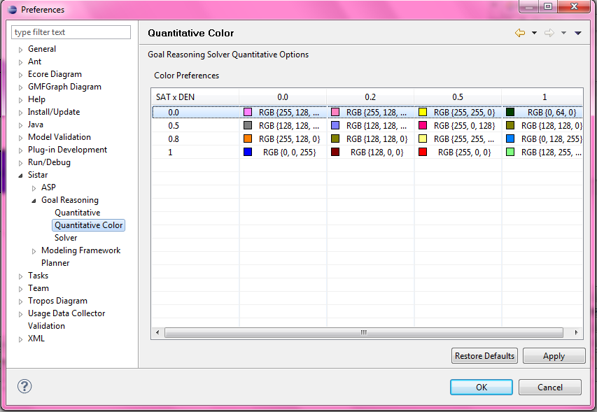
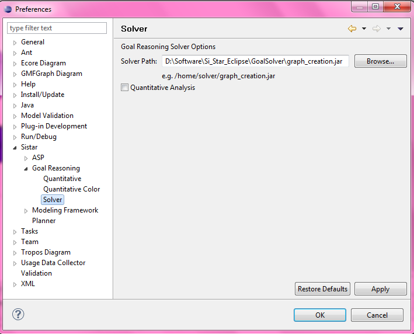

Goal Reasoning Quantitative
User can specify the upper threshold for SAT/DEN value to be used for coloring feedback

Goal Reasoning Quantitative Color
User can specify the color for a combination of SAT/DEN value to be used for coloring feedback

Goal Reasoning Solver
User can specify the solver to be used for Goal Analysis
